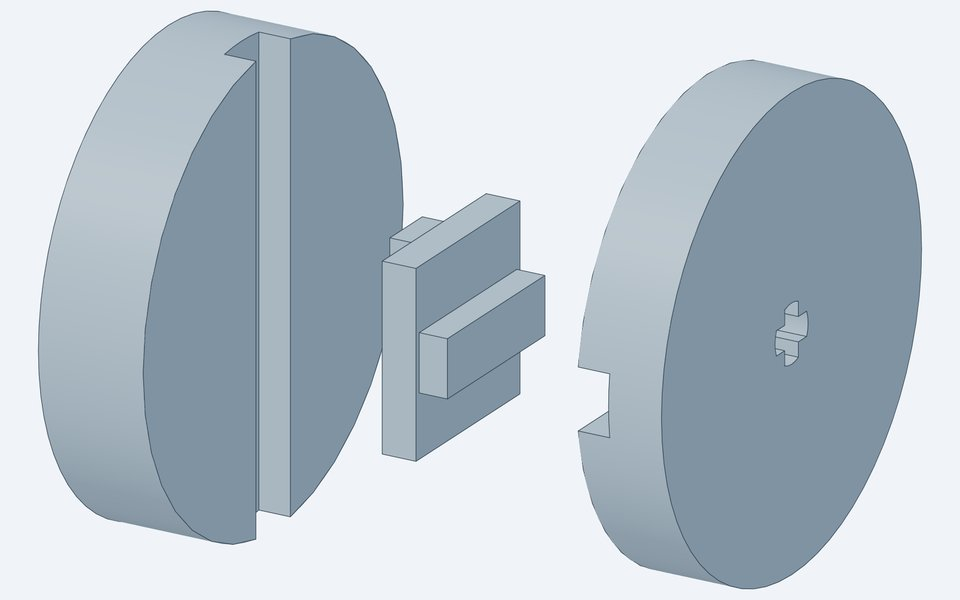
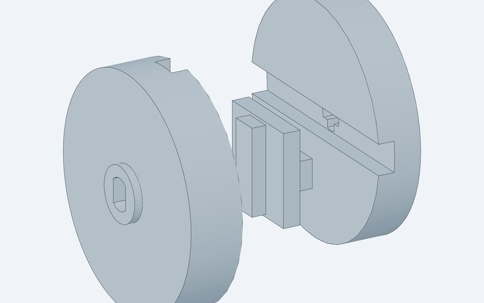
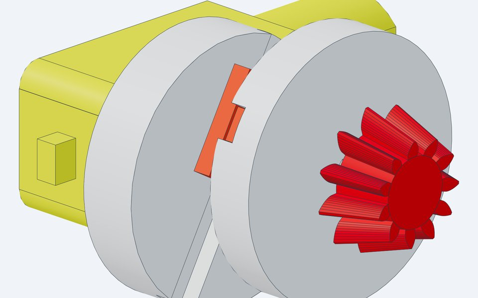

十字滑塊聯軸器
兩根平行但錯開的軸，用一個兩面各有凸條的滑塊連起來：滑塊一邊轉一邊滑，兩軸轉速永遠完全相同。本頁用泰勒斯定理說明滑塊怎麼動，並以自印的「差速器＋十字滑塊聯軸器＋TT 馬達」驅動模組為例。
1. 構造


- 輸入輪轂：固定在第一根軸上，面向滑塊的一面有一道直槽
- 中間滑塊（Slider / Center Disc）：兩面各一條凸條（Tongue），兩條凸條互相垂直
- 輸出輪轂：固定在第二根軸上，有一道和第一道垂直的槽
- 滑塊沒有固定在任何軸上，它可以沿第一道槽滑、也可以沿第二道槽滑——這兩個自由度剛好吸收兩軸的平行偏移
- 1820 年代由愛爾蘭工程師 John Oldham 發明，用在蒸汽船的槳輪軸
2. 運動原理：泰勒斯定理
- 從軸向看，輸入軸心 O₁、輸出軸心 O₂ 相距 e（偏移量）。滑塊中心 P 一定同時在兩條直線上： 過 O₁、沿第一道槽的直線，以及過 O₂、沿第二道槽的直線
- 兩條凸條互相垂直，所以這兩條直線永遠互相垂直 → ∠O₁PO₂ = 90°
- 泰勒斯定理（Thales' Theorem）：看直徑兩端成直角的點都在圓上 → P 永遠在以 O₁O₂ 為直徑的圓上
取 O₁ = (0, 0)、O₂ = (e, 0)，輸入轉角 φ：
P = e·cos φ · (cos φ, sin φ) = ( e/2 + (e/2)·cos 2φ , (e/2)·sin 2φ )
→ 滑塊中心繞圓心 (e/2, 0)、半徑 e/2 公轉，轉角 2φ（輸入轉一圈，滑塊公轉兩圈）
- 為什麼一定是 1:1：滑塊是剛體，它的兩條凸條固定相差 90°；輸入槽跟著第一條凸條、輸出槽跟著第二條，所以兩個輪轂的轉角永遠相等，沒有任何瞬間速度差（這點和單個萬向接頭不同）
- 凸條在槽裡的滑動：第一條凸條離 O₁ 的距離 = e·cos φ，第二條離 O₂ 的距離 = e·sin φ；每條每轉來回一次，總滑動距離 4e，最大滑動速度 e·ω
- 離心力：滑塊質量 m 以半徑 e/2、角速度 2ω 公轉 → F = m·(e/2)·(2ω)² = 2·m·e·ω²，和轉速平方成正比，這就是高速時會振動的原因
3. 互動模擬（軸向視圖）
輸入輪轂與直槽（後）輸出輪轂與橫槽（前）滑塊滑塊中心軌跡
輸入角 φ
輸出角
滑塊公轉角 2φ
凸條 1 位置
凸條 2 位置
最大滑動速度
滑塊公轉
離心力（1.4 g 滑塊）
速度比
畫面以輪轂 Ø40、凸條長 15 mm（驅動模組的尺寸）繪製；動畫轉速固定放慢，數值以設定轉速計算。白線 O₁P、O₂P 永遠垂直，所以 P 一直在黃色圓上。1.4 g 是 PLA 實心滑塊的估計重量。
4. 優缺點與設計要點
優點
- 等速 1:1，沒有萬向接頭那種轉速波動
- 可補償較大的平行偏移，而且軸向很短
- 構造簡單，三件都是平面加直槽，容易 3D 列印、不用支撐
- 中間滑塊可用塑膠做成過載保險件（卡死時先壞滑塊），也能電氣絕緣
缺點
- 滑塊偏心公轉，偏移大、轉速高時會振動
- 凸條在槽裡一直滑，有摩擦損失和磨耗，需要潤滑
- 幾乎不能補償角度偏差，兩軸要盡量平行
- 凸條和槽的間隙造成少許背隙，不適合精密定位
- 凸條長度：凸條滑到最遠時（離軸心 e）還要整條留在槽內：若槽貫穿輪轂，需 L/2 + e ≤ 輪轂半徑
- 間隙：FDM 列印時凸條每邊留 0.15～0.3 mm，太緊會卡、太鬆會晃
- 兩道槽在不同面：一個輪轂的槽在背面、另一個在正面，滑塊夾在中間，兩輪轂之間各留 0.3 mm 左右
- 偏移量：一般盡量小；偏移越大，滑動距離（4e）、摩擦和離心力都跟著變大
5. 實例：差速器＋十字滑塊聯軸器＋TT 馬達

| 項目 | 數值 |
|---|---|
| 偏移量 e | 12 mm（TT 馬達置中後，馬達軸在中線左邊 12 mm） |
| 可用長度 | 馬達前端到小齒輪軸承塔 21 mm |
| 總長／外徑 | 21.7 mm／Ø40 |
| 馬達端輪轂 | D 形孔套 TT 馬達軸，背面直槽 5.3 寬 × 2.8 深 |
| 滑塊 | 16 × 16 × 3 方形，兩條凸條 5 × 2.5 × 15，可立著印 |
| 軸端輪轂 | 十字孔套 LEGO 2L 軸，正面橫槽 |
| 凸條長度檢查 | 15/2 + 12 = 19.5 ≤ 20（輪轂半徑）✓ |
| 轉動檢查 | 每 15° 一步轉一整圈：無碰撞，凸條始終在槽內 |
e = 12 mm 對十字滑塊來說偏大，但 TT 馬達輸出只有約 200 rpm，滑塊離心力只有約 0.015 N，振動不是問題；主要注意凸條和槽的摩擦，必要時點潤滑油。完整設計、3D 組裝與運轉動畫、列印檔：3D 列印作品集 · 差速器＋十字滑塊聯軸器＋TT 馬達（這組原本是為差速轉向車設計的後軸驅動；整車還在修改中、不一定採用十字滑塊，所以獨立成一個作品）。為什麼不用萬向接頭：萬向接頭 §7。
6. 其他應用
- 3D 印表機 Z 軸：步進馬達接導螺桿，吸收導螺桿的微小偏擺，避免列印件表面出現週期性紋路（Z-wobble）
- 渦卷式壓縮機（Scroll Compressor）：冷氣壓縮機裡的「十字環」（Oldham Ring）讓動渦盤只能平移公轉、不能自轉
- 送紙滾輪、印刷機：滾輪位置要能調整，兩軸距離會變
- 小型泵浦、計量設備：偏移小、轉速中低、需要電氣絕緣的場合